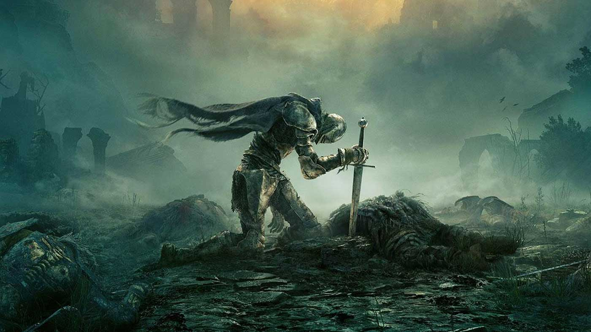
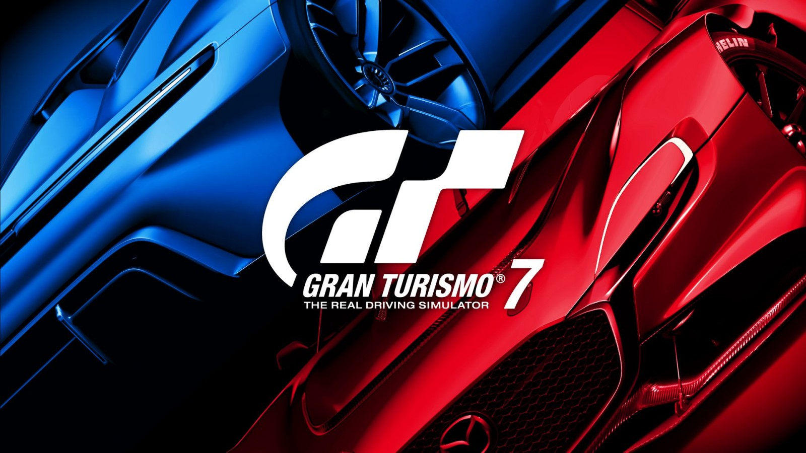
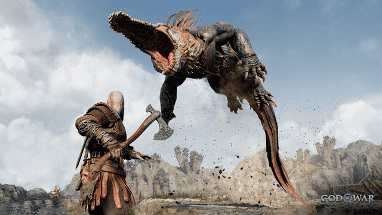

Próximos Lanzamientos
Elden Ring
Del creador de Dark Souls y George R.R. Martin, una nueva épica de acción y fantasía.

Gran Turismo 7
La última entrega de la aclamada serie de simulación de conducción, con gráficos impresionantes y una jugabilidad realista.

God of War: Ragnarok
Continúa la historia de Kratos y Atreus en una nueva aventura llena de acción y mitología nórdica.

Reseñas Recientes
The Last of Us Part II
Una obra maestra de la narrativa y el diseño de videojuegos. Imprescindible.
Ghost of Tsushima
Explora un Japón feudal hermosamente renderizado y domina el arte de la espada samurái.
Horizon Forbidden West
Únete a Aloy en una nueva y emocionante aventura en un mundo post-apocalíptico lleno de criaturas mecánicas.
The Legend of Zelda: Tears of the Kingdom
La secuela del exitoso juego de mundo abierto de Nintendo promete sorprender con nuevas mecánicas y un vasto mundo por explorar.
Artículos Destacados
Los 10 mejores juegos de mundo abierto de todos los tiempos
Explora mundos vastos y sumérgete en aventuras épicas con esta lista de los mejores juegos de mundo abierto.
Guía de compra de consolas: Xbox Series X vs PlayStation 5
Comparamos las especificaciones, el rendimiento y los exclusivos para ayudarte a elegir entre Xbox Series X y PlayStation 5.
Los videojuegos y su impacto en la cultura popular
Explora cómo los videojuegos han influido en la música, el cine, la moda y más en esta exploración de su impacto cultural.
Los juegos más esperados del año según los fans
Descubre cuáles son los juegos más anticipados por la comunidad de jugadores para este año y qué los hace tan especiales.
El auge de los eSports y su impacto en la industria del entretenimiento
Analizamos el crecimiento explosivo de los deportes electrónicos y su influencia en el mundo de los videojuegos y más allá.
Los juegos indie más destacados del momento
Explora el emocionante mundo de los juegos independientes y descubre algunas de las gemas ocultas más impresionantes.